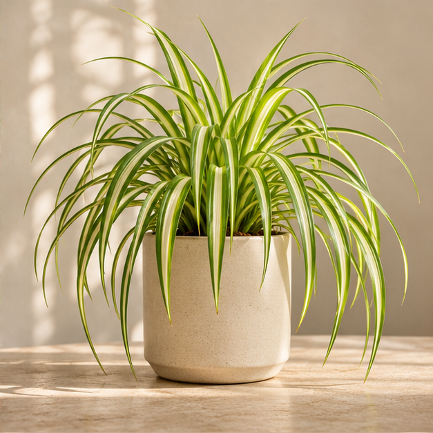
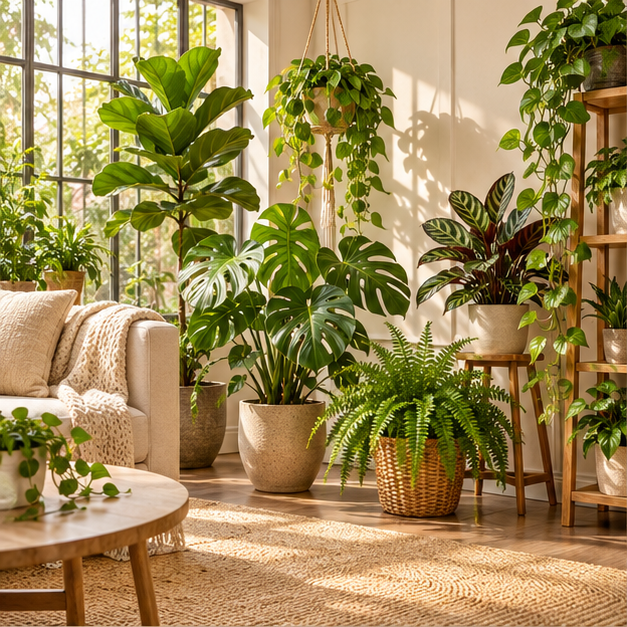
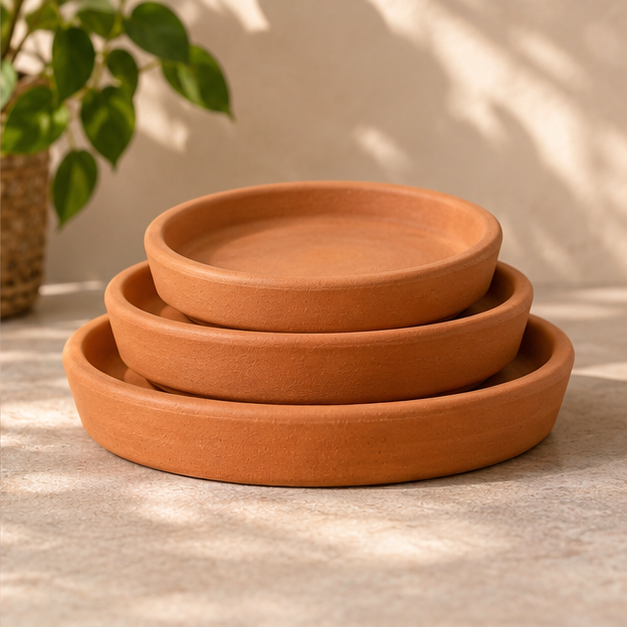

Indoor Plants

Spider Plant
Green and cream leaves.
Price: ₹299

Snake Plant
Tall, upright leaves.
Price: ₹399

Golden Pothos
Beautiful trailing leaves.
Price: ₹249
Bring nature home

Explore indoor plants, pots and simple plant care tips for your home.

Green and cream leaves.
Price: ₹299
Tall, upright leaves.
Price: ₹399
Beautiful trailing leaves.
Price: ₹249

Price: ₹199

Price: ₹99